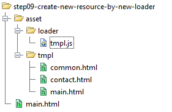

Introducing Matrix.js
What is Matrix.js
Marix.js is an extensible JavaScript library that can load client side modules on demand from server. It helps you to build Single Page Application with faster loading speed, less memory consumption, and better module reusability.
What is the dependency of Matrix.js
jQuery 1.5+. It can dynamically load jQuery from CDN, if jQuery is not loaded.
Background
Today, we are trying to build large scale Single Page Application with experience of native application. This kind of application usually depends lots of modules. These modules can be are system modules like jQuery, or MV-ish library/Framework, or they can be application modules such customs widget, template, css module, localization resource, lookup data. As the application grows, the number of moduels increase. These becomes quite a challenge us. In the following, I try to use Problem/Solution style to explain how to use matrix.js
Problems
Problem: Defer Loading
I have a traditional web page, which consist of lots of widget and references lots JavaScript library, I want to speed up the loading of first page.
Solution:
I can synchronously load the minimun set of modules to render the initial view that use can see, and asynchronously load other modules in the background. Here is the source
<!-- in the web page --> <input type="button" id="btnOk" value="Ok" disabled /> <script type="text/javascript"> matrix.baseUrl = "js/" matrix( "module1.js" ); </script>
//in the module1.js
$("#btnOk").attr("disabled", false).click(function () {
alert("hi");
});
Problem: Loading dependencies
My module dependes on other modules, such as localization string, css. I want to load them together.
Solution 1: Specify depenencies inside of module file using annotations
In this solution, we put some annotation to the header of the module files which record the depedencies. Adding annotatio to the source file has least impact on the source files. Here is the source.
/*
<@require>
localization.js, module1.css
</@require>
*/
$( "#btnOk" ).attr( "disabled", false ).click( function() {
$( "<h1 class='mymodule'>" + message + "</h1>" ).appendTo( "body" );
} );
Solution 2: Specify dependencies inside of module file using api.
In previous solution, if the source file is located in a cross-site domain, current browser does not allow us to inspect the content of the source file. So that solution will not work. In order to solve the problem, we can use matrix.define to rewrite the code in previous solution. Here is the source.
//in source file module1.js
matrix.define(
"module1.js", //current module id
"localization.js, module1.css", //depenencies
function() {
$( "#btnOk" ).attr( "disabled", false ).click( function() {
$( "<h1 class='mymodule'>" + message + "</h1>" ).appendTo( "body" );
} );
} );
Solution 3: Specify dependencies in using matrix.require
If you want to centralize the dependencies management to a single file you can use "matrix.require", so that you don't need to specify dependencies in each module files. Here is the source.
<script src="modules/profile.js"></script> <script type="text/javascript"> matrix.baseUrl = "modules/" matrix( "module1.js" ); </script>
//profile.js
matrix.require({
"module1.js": "localization.js, module1.css"
});
Problem: Too many http round trips
I have lots of modules, each modules is in its own file, this create lots of HTTP calls.
Solution 1: use build tools to combine module files
We can use build tools to combine and js files, however, the original source code need to be defined using matrix.define method. Here is the source.
//in module1.js
matrix.define(
"module1.js", //current module id
"localization.js, module1.css", //depenencies
function() {
$( "#btnOk" ).attr( "disabled", false ).click( function() {
$( "<h1 class='mymodule'>" + message + "</h1>" ).appendTo( "body" );
} );
} );
matrix.define( "localization.js", function() {
window.message = "hello world!";
} );
Solution 2: Use cache header
In this solution, we don't need combine the files. We still use the loose source file. For the first time, there are lots http round trips, this is acceptable the web page is is single page application, take this as installation process. If we use proper http cache control header, the second visit of the web page, all the source file will be served locally. There will be zero http call for these modules. Make sure the Cache-Control is infinitive long, so that it will never expire virtually, like the following.
Cache-Control: max-age=315360000 Expires: Fri, 01 May 2020 03:47:24 GMT
So even you have lots of loose file, the second request will be still very fast, like the following image shows

Problem: I want to client discard the cached copy of module files.
In the previous solution, we set the cache-control header to a crazily large value, so that it will never expired, but what if we have updated our module files and we want the client to be able to pick it up immediately?
Solution
The solution is to change the url by adding a small hash value, so that browser think that it is a new resource.
//modules/module1.css?v=2
matrix.hash("2");
//
//this will always generate new hash each time
//the page is load, and basically disable cache,
//it is good for development.
//module1.css?v=1348516706585
matrix.hash(true);
Problem: Statically loaded module mixed with on-demand-load module
I have use built-tool to combine some module into a file and preloaded, however some modules is loaded on demand, will there be conflict?
Solution
As long as you use matrix.define method to define your module, it doesn't matter whether you load them statically using script tag or load them on demand using matrix.js. In the following sample, name
<!--statically load bye.js--> <script src="modules/bye.js"></script> <script type="text/javascript"> matrix.baseUrl = "modules/" matrix( "module1.js" ); </script>
//in module1.js
matrix.define(
"module1.js", //current module id
"localization.js, module1.css, bye.js", //depenencies
function() {
$( "#btnOk" ).attr( "disabled", false ).click( function() {
$( "<h1 class='mymodule'>" + message + bye + "</h1>" ).appendTo( "body" );
} );
} );
matrix.define( "localization.js", function() {
window.message = "hello world!";
} );
//in bye.js
matrix.define("bye.js", function () {
window.bye = "bye!";
});
Problem: Module package
I have a group of relative modules, I want to logically package them into a group, however these modules are not necessarily combined in a physical file. So that when I call load the package, all the modules of it will be loaded.
Solution
We can use the pack module to group them. In matrix.js, there are a couple built-in loader, such as "js" loader, "css" loader. "pack" is another special loader which serve as the container of other resource. A package module can also include other module. To define its content, we can use "matrix.require". The follwing is the sample code
matrix.require( "main.pack", "greeting.js, name.js" )
matrix( "main.pack" ).done( function() {
$( "body" ).append( "<h1>" + greeting + "," + name + "</h1>" );
} );
Problem: Module url management
Normally, we have different modules in different location. Some reside in CDN, some resides in folders of some kind structures.
Solution
If the module id is absolute url like the following. The id is will be used as the url
matrix("http://ajax.googleapis.com/ajax/libs/jqueryui/1.8.23/jquery-ui.min.js");
If your module id is just is in the format of "fileName.ext", its url is by default matrix.baseUrl + moduleId.
<script src="modules/profile.js"></script> <script type="text/javascript"> matrix.baseUrl = "modules/" //url will be modules/module1.js matrix( "module1.js" ); </script>
However, the url of module can be explicitly specified. For example
matrix.url("jqueryui.js", "http://ajax.googleapis.com/ajax/libs/jqueryui/1.8.23/jquery-ui.min.js");
matrix("jqueryui.js");
Problem: I have non-javascript modules such as css, template, image, can I dynamically load them.
Solution: create a new loader with load function
matrix.js is a general purpose module loading system, it can be extended to load new modules as long as the modules can be consumed by browser. The following is the template code to create a new module, these might be overwhelming, but most of them are optional, and you can inherite the missing member from base loader.
matrix.loader.set( "loaderName", ["baseLoaderName",] {
//mandatory
//load is function
load: function( moduleId ) {
//if you can return the module immediately
//return it now , return module
//
//if not, your can return a promise object
//
//in your processing code make sure
// to defer.resolve(moduleId, module) later
},
//optional
unload: function( moduleId ) {
},
//optional
//return a url relative to matrix.baseUrl or an absolute url
url: function( moduleId ) {
},
//optional
//get the depedencies of a moduleId
require: function( moduleId ) {
//return a resourceString or resourceArray
//return "a.html, b.js";
},
//optional
//the first handler that be execute
//when promise is done
done: function( moduleId ) {
},
//optional
//the first handler that be execute
//when promise is failed
fail: function( moduleId ) {
},
//this is optional
//it is necessary when we use file name to calcualate url,
// and the loader name is different from extension of
//of physical file name
fileExt: "file extension"
} );
The following code is all is need to build a image loader. And we use the loader in this photo album sample
matrix.loader.set( "image", {
load: function( moduleId ) {
var defer = $.Deferred(),
promise = defer.promise(),
url = matrix.url( moduleId );
var img = new Image();
img = new Image();
img.onload = function() {
defer.resolve( moduleId, url );
};
img.onerror = function() {
defer.reject( moduleId, url );
};
img.src = url;
return promise;
}
} );
matrix.loader.mapFileExtsToLoader( "jpg,png,bmp,gif", "image" );
What should be noted is that the loader name is "image". Normally, matrix.js use extension of your moduleId to locate the loader. If your resource id is "myfile.image", then the loader will be picked. However, our image extension is usually "jpg", "gif" and so on. The mapFileExtsToLoader method solve this problem.
This loader has been included in the library. Here is just to shows how to create a loader with load function.
Solution 2: create a new loader with load pipeline
The "load" member of a loader can be also a pipeline object like the following. Basically, via.js treat the load process as pipeline which combine serveral tasks. But you only need to implement compile or crossSiteLoad method.
load: {
//optional
//determine whether moduleId is staticalLoaded
//by default it is hasScriptTag
staticLoaded: function( moduleId ) {
return true;
},
//optional if you have crossSiteLoad
//return the compile result or nothing
//by default is globalEval
compile: function( moduleId, sourceCode ) {
},
//optional if all your resource is local
//if your resource can be cross site you need to implement this
//return a promise
//by efault is getScript
crossSiteLoad: function( moduleId ) {
//return promise
},
//optional
//this provide some static dependencies by
//parsing the source code
//by default it is parseRequireTag
buildDependencies: function( moduleId, sourceCode ) {
//return "x.js, b.html, c.css";
},
//optional
//return a function () {}
//by default it is parseUnloadTag
buildUnload: function( sourceCode, moduleId ) {
//return a function () {}
}
}
In the following we will build template loader. First we create a file under {matrix.baseUrl}/loader/tmpl.js, the file we have the following code.
// in {matrix.baseUrl}/loader/tmpl.js
/*
<@require>
http://ajax.microsoft.com/ajax/jquery.templates/beta1/jquery.tmpl.js
</@require>
*/
(function( $, matrix ) {
matrix.loader.set( "tmpl", {
load: {
staticLoaded: function( moduleId ) {
return !!$.template[moduleId];
},
compile: function( moduleId, sourceCode ) {
$( sourceCode ).filter( "script" ).each( function() {
$.template( this.id, $( this ).html() );
} );
}
},
//we intend to put all the resource file under "{matrix.baseUrl}/tmpl" folder
url: "folder",
//the actual file extention is not "tmpl", but "html"
fileExt: "html"
} );
})( jQuery, matrix );
Here we use a pipeline object as loader, it implement the staticLoaded, compile. Please note that this loader depends on jquery.tmpl.js, this dependencies will be automatically loaded. Now we can load external template by using the following code.
matrix( "main.tmpl" ).done( function() {
$.tmpl( "main", "hello,world" ).appendTo( "body" );
} );
The template file is organized like the following.
The interesting thing is that not only we can use annotation in JavaScript file, but we also use it in any text file such as template file
<!--
<@require>
common.tmpl,
contact.tmpl
</@require>
-->
<script type="tmpl" id="main">
{{tmpl "header"}}
<h2>${$data} (render by hello.html template file)</h2>
{{tmpl "contact"}}
{{tmpl "footer"}}
</script>
Problem: I have loaded a module, but can I unload it when it is no longer used.
This is very common problem. We load a widget and use it for a while and close it remove it from DOM, but it definition still stay in memory. If we continue like this, our Single Page Application will be using more and more memory. To be able to remove the module completely, is important for a long running Single Page Application.
Solution 1: Define unload logic using annotation.
Matrix.js not only support loading module, it also support unloading module. In the following We will add the unloading logic as annotations. This is good third party code code, and you don't want to modify them. However, annotation does not work for cross-site resource.
matrix( "main.js" ); // //this will call the unload logic embedded in the "unload" annotation matrix.unload( "main.js" );
//in main.js
/*
<@unload>
dummy = null;
delete window.dummy;
</@unload>
* */
(function( $ ) {
var dummy = [];
for (var i = 0; i < 999999; i++) {
dummy.push( (new Date).toString() );
}
for (var i = 0; i < 999999; i++) {
dummy.push( function() {
return new Date();
} );
}
window.dummy = dummy;
})( window );
matrix.js use annotation to build a function, which it will be called when the matrix.unload method is called.
Solution 2: use matrix.define to define unload logic
We can use matrix.define explicitly define how the unloading logic works, like the following. This approach require you slighly modifined the code in the module. But it works even it is cross-site resource.
//in main.js
matrix.define( "main.js",
//load function for the module
function() {
(function( $ ) {
var dummy = [];
for (var i = 0; i < 999999; i++) {
dummy.push( (new Date).toString() );
}
for (var i = 0; i < 999999; i++) {
dummy.push( function() {
return new Date();
} );
}
window.dummy = dummy;
})( window );
},
//unload function for the module
function() {
dummy = null;
delete window.dummy;
} );
Problem: Switch module
I have a module, such as a css file. The page initially use these module, however, we want to allow user swap the old module with a new module. The swap means the old module is unloaded first, and the new module is loaded.
Solution 1: change the url of module dynamically
When a module is loaded, changing the url of a module will unload the resource at old url, and the module at the new url will be loaded. Here is the sample file
$( "#btnSwitchStyle" ).toggle( function() {
matrix.url( "main.css", "main2.css" );
}, function() {
matrix.url( "main.css", "main1.css" );
} );
Solution 2: change dependencies of of a module
When a module is loaded, and later the dependencies change, matrix.js will unload the module first, and and update new dependencies, and try to load it again. Here is an example
$( "#btnSwitchStyle" ).toggle( function() {
matrix.require( "css.pack", "main2.css" );
}, function() {
matrix.require( "css.pack", "main1.css" );
} );
Problem: I don't want to manually map my module id to a url
We can use matrix.url to specify the url for a module id, but if the module is placed and named according to a convention, we can automatically generate the url for that.
Solution: create new loader for that.
In the following, jQuery UI widget's css is placed based on a convention, like the following.
matrix.loader.set( "widget_css", "css", {
url: function( moduleId ) {
var widgetName = matrix.fileName( moduleId );
return matrix.baseUrl + "jquery.ui/css/base/jquery.ui." + widgetName + ".css";
}
} );
//this will load css at {matrix.baseUrl}/jquery.ui/css/base/jquery.ui.dialog.css";
matrix("dialog.widget_css");
Problem: I don't want to manually manage dependencies of the modules
If I have a widget x.js, it always requires on a x.tmpl, and x.css, I don't want to repeat myself.
Solution: create a loader to manage dependencies automatically.
matrix.loader.set( "widget", "js", {
require: function( moduleId ) {
var widgetName = matrix.fileName( moduleId );
return widgetName + ".tmpl," + widgetName + ".css";
}
} );
//it will automatically load x.tmpl, and x.css
matrix.load("x.widget");